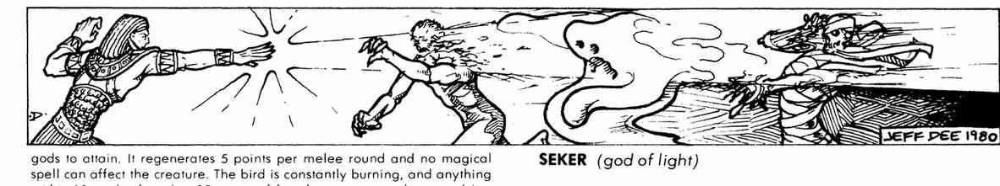

真安卡与象形文字
真安卡能把死者完整复活，也能以火焰杀死接触它的非神性生物；每个位面同时最多存在七件。原书随后给出供主持人用于地图、卷轴和庙宇铭文的象形文字词表。

上一节：赛特、舒、泰芙努特与托特 · Set、舒 Shu、泰芙努特 Tefnut 与托特 Thoth
下一节：芬兰神话 · Finnish Mythos
真安卡能把死者完整复活，也能以火焰杀死接触它的非神性生物；每个位面同时最多存在七件。原书随后给出供主持人用于地图、卷轴和庙宇铭文的象形文字词表。

上一节：赛特、舒、泰芙努特与托特 · Set、舒 Shu、泰芙努特 Tefnut 与托特 Thoth
下一节：芬兰神话 · Finnish Mythos